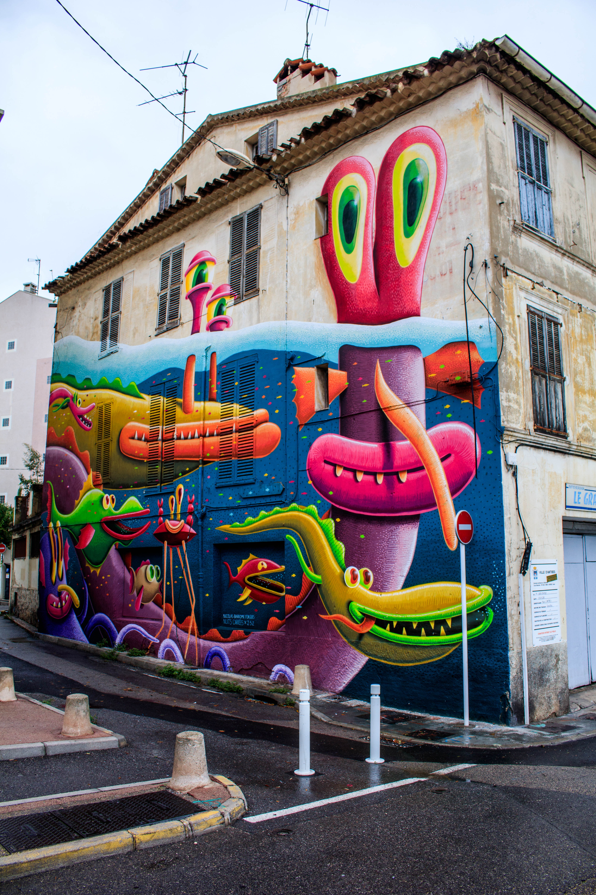

20 de maio de 2023
A Visão da Tecnologia Nós Dias Atuais

Dentro destas paredes, encontrará o coração pulsante da nossa era digital. Um smartphone elegante, um símbolo poderoso de conectividade e possibilidades infinitas. O seu ecrã táctil serviu outrora como porta de entrada para o conhecimento, o entretenimento e o vasto reino da ligação humana. Tinha o poder de aproximar as pessoas, ultrapassando distâncias com um simples toque.
Ao seu lado, descobrirá um computador portátil, a porta de entrada para uma informação sem limites e uma criatividade sem limites. As suas teclas, uma vez tocadas por dedos ágeis, abriram um mundo de imaginação, permitindo a inovação, a comunicação e a manifestação de sonhos. Foi o portal através do qual o conhecimento fluiu, moldando mentes e capacitando indivíduos para mudar o curso da história.
Mas a nossa cápsula do tempo não se fica por aqui.
Aqui, também encontrará os sussurros fantasmagóricos da realidade virtual. Coloque os auscultadores e seja transportado para reinos que estão para além da sua imaginação.
Explore vastas paisagens, interaja com a inteligência artificial e mergulhe em reinos digitais que esbatem a linha entre o que é real e o que não é. Experimente a magia da capacidade da tecnologia de remodelar a nossa percepção do mundo.
Olhe com atenção e descobrirá um dispositivo pequeno e despretensioso - uma unidade USB. Na sua forma minúscula, encontra-se um tesouro de memórias, um arquivo digital das nossas vidas. Fotografias congeladas no tempo, capturando sorrisos, lágrimas e momentos de pura alegria. Vídeos que trazem de volta o riso, a nostalgia e a beleza da ligação humana. A unidade USB representa o nosso desejo de preservar e partilhar as nossas experiências mais queridas, assegurando que perduram com o passar do tempo.
20 de maio de 2023
O Futuro Juntos Iremos Mais Longe

Por fim, deixe o seu olhar pousar num símbolo do futuro - um par de óculos de realidade aumentada. Ao colocar estes óculos futuristas, testemunhe um mundo melhorado por sobreposições digitais. Veja a informação ganhar vida diante dos seus olhos, integrando-se perfeitamente com o que o rodeia.
Experimente um futuro onde a tecnologia dissolve as barreiras entre o físico e o virtual, onde as linhas do que é possível se esbatem a cada dia que passa.
Esta cápsula do tempo serve como testemunho da marcha implacável da tecnologia, um instantâneo de um momento em que o nosso mundo digital estava no auge da grandeza. Contém não só os artefactos físicos, mas também o espírito intangível da inovação, da curiosidade e do desejo humano inabalável de ultrapassar os limites do que é possível alcançar.
Que ela te inspire, caro explorador, enquanto te aventuras no futuro. Que te recorde que o poder da tecnologia não reside na sua mera existência, mas nas mãos daqueles que a manejam com sabedoria, compaixão e uma visão para um mundo melhor.
Com esperanças e sonhos,
Os curadores da maravilha tecnológica!